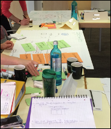
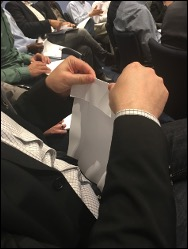
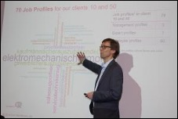
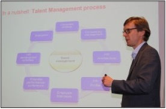
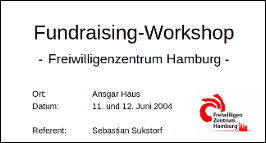

{% if env.GA_ENABLE == "true" %} {% endif %}
Sebastian Sukstorf
Home
Portfolio
Projekte
Vorträge
Publikationen
Vorträge
Vorträge und Präsentationen

Human Resource Management
Inhalt: Strategische Herausforderungen der Personalpolitik: Personalstrategien - Rolle des Personalmanagements - Internationalisierung - Fusionen - Demografische Entwicklung
Sebastian Sukstorf
Apr 19, 2023

Leadership Change-Management Training Programm
Leadership Change-Management Training Programm für eine Zielgruppe von 160 internationalen Führungskräften.
Sebastian Sukstorf
Mar 15, 2017
Auf der Suche nach dem Supertalent … oder: Entsteht Erfolg im Team?
Erleben Sie einen faszinierenden Vortrag, der die Frage aufwirft, ob Erfolg individuell oder im Team entsteht. Sebastian Sukstorf beleuchtet Gemeinsamkeiten und Unterschiede…
Sebastian Sukstorf
Jun 24, 2016

Wissensmanagement und demographischer Wandel
Wissensweitergabe innerhalb eines geschlossenen Talent-Management-Systems, das unter der Leitlinie ‘Kollegen helfen Kollegen’ betrieben wird.
Sebastian Sukstorf
Jun 15, 2015
Vom Talent Management zur strategischen Personalplanung
Mit moderner Personalführung den Nachwuchs überzeugen
Sebastian Sukstorf
Jul 15, 2014

Schritt für Schritt zur strategischen Personalplanung in KMUs
Talent Management Projektes neue Stellenarchitekturen entwickelt und detaillierte Stellenprofile unter Einbeziehung der gesamten Belegschaft in einer workshopbasierten…
Sebastian Sukstorf
Jan 15, 2014
Mitarbeitergespräche: Gesprächsführung und Zielvereinbarung
Eckpunkte erfolgreicher Mitarbeitergespräche und grundlegende Techniken der Gesprächsführung. Aktives Zuhören, Stellung nehmen und strukturierte Gesprächsleitung.…
Sebastian Sukstorf
Mar 15, 2011
Prozessmanagement, SAP- und IT-Grundlagen Schulung
Grundlagen und Modelle der Prozessanalyse im Bereich Prozessmanagement. Lernen Sie verschiedene Darstellungsformen wie Wertschöpfungsketten, BPM und eEPK kennen. Vertiefen…
Sebastian Sukstorf
May 8, 2009
Prozessmanagement - Industrie: CRM, SCM und PLM
Grundlagen und fortgeschrittene Konzepte in CRM, SCM und PLM, einschließlich Definitionen, KPI, Kundenwertanalyse, Supply Chain Management, Prozesssteuerung, sowie die…
Jul 13, 2007

Fundraising Workshops für NGOs
Grundlagen des Fundraisings, einschließlich Begriffsbestimmungen, ethische Überlegungen, Managementprinzipien, Qualifikationsanforderungen, Fundraisingmethoden und Märkte im…
Jun 12, 2004
No matching items